General Information
This branded website is publicly available at mingled-brand.github.io/Mingled-website/index.html (please change text and hyperlink destination)
This website was created by… (only students listed below will be graded!)
- Lara-Elin Deiniger(ID: 214384)
- Julia Pollich (ID: 211308)
- Mihaela Irobalieva (ID: 210781)
- Danique de Munck (ID: 214529)
Content
Please clarify here the match between students and pieces of content. Make sure that you provide a link to the correct page within the website
| # | Student ID | Value | Name and link of content |
|---|---|---|---|
| 1. | 214384 | Courage (index), About us page content, Intrigued part (index), personal card (about us page) | Index page, About us page |
| 2. | 211308 | Proactiveness (index), What is Mingle maker, Once upon a time, Vision, Mission (index), Mingle Maker and events (mingle maker), personal card (about us) | Index page, About us page, Mingle-Maker page |
| 3. | 210781 | Open-mindedness (index), personal card (about us page) | Index page, About us page |
| 4. | 214529 | Bravery (index), personal card (about us page) | Index page, About us page |
Production
Design Elements
Please provide a list of design elements alongside their justifications:
-
A colour scheme (with HTML colour codes, which must be consistent with your final website)
— see the example below from the BUas brand book:
- #F55355 Hot coral (orange leaning into red). Symbolizes acceptance. It relates to our value of open mindedness. It’s also a bold and a bright colour to encourage our users to get out of their comfort zone and be bolder. Orange can also be associated with The Netherlands – as our brand is Dutch based; and red is associated with tulips – a popular Dutch symbol.
- #976099 Aster Violetta (purple) -> Secondary colour – Mostly for accents and to compliment the main colours. Purple is associated with mystery and going to a new country as an expand could be quite the mystery. Part of our brand is helping our users adapt better to the new unfamiliar environment. It also compliments well the blue colour and the red hues in the Hot coral colour. Purple is also a neutral colour and with it we are addressing people of all colours no matter their background.
- #022859 Marine blueBlue most commonly symbolises trust. We want our users to trust us to help the accommodate better in the Netherlands. Also relating to colour theory blue is a complimentary colour to orange (in our case hot coral).
- #D99B29 Buttercup (yellow) - Secondary colour – Mostly for accents and to compliment the main colours. Symbolizes optimism, happiness and friendship. We want to encourage our users to create friendships and connections with the local communities. Yellow is also a complimentary colour to purple. We use yellow for all buttons that lead to pop-ups representing and to accentuate the interactivity with us as a brand and our community.
- #F2E8D5 Pearled Couscous (or beige). The colour beige is neutral, calm, and relaxing. In phycology it’s also associated with proactiveness. Since the other two colours we are using for our brand are vibrant and strong we are using beige to bring more balance into our colour plate and also representing the balance we want to give to our consumers.
- Font choices
- UX and UI
- Navigation and style
- Headlines and Logo: Scriptorama Markdown JF The chosen font boasts a bold character that effortlessly captures our users’ attention and perfectly embodies our core value of boldness. Its simplicity and readability make it an ideal choice for conveying information effectively. What's more, its gender-neutral design, devoid of overly curvy or harsh angles typically associated with femininity and masculinity, respectively, ensures an inclusive and non-discriminatory approach to communication. The font also looks playful and is reminiscent of a paintbrush to convey movement and actively paint our users’ future. Overall, this font is a highly professional and strategic choice for our communication needs.
-
Body: Source Sans Pro Font Family This font is the epitome of simplicity, making it the ideal choice for paragraphs with large amounts of text. The font ensures that readers can easily read and understand the content without straining their eyes. Furthermore, it aligns perfectly with our gender-neutral approach to communication, complementing the bold headings without detracting from their impact. In short, this font strikes the perfect balance between readability and style, making it a wise choice for our communication needs.
The front page of a website plays a crucial role in capturing the attention of visitors. To achieve this, we used a flip card. A flip card is a design feature that allows users to interact with content by flipping or rotating it, often revealing additional information or images. By using a flip card on the front page we are redirecting our users directly and explanation of our service and then redirect them to our “Mingle - maker” page (our unique value proposal). Capture the attention of website visitors through intriguing them with a flipcard and getting their attention with the Call to Action on the back of the flipcard, so they keep on moving around the page.
Another thing to note of great importance is that when our users enter our website they are immediately met with our logo. That way they will know that they are using our brand and if they are coming from our social media, they will already be familiar with our logo and our design elements and colours.
The background photo on the “Home” page is there to eye of the user. The photo represents 4 people being together outside and happy. It’s in the colours of our brand to make the user feel that they are at the right webpage.
Sliders – we are using them to “save” space and make it easier for our users to go through our website on our “Homepage” page. There is also implemented scrolling side to side. To give a quick overview and redirect the page visitor to the part or information they are most interested in.
After being redirected to the explanation of the “Mingle-Maker”, the user can decide to not go forward to the “Mingle-Maker” page, but gets intrigued by 3 sliders, presenting our vision, our values and our team. This is done to get their attention onto these parts as well. There are buttons on the sliders so if our users want to read more about our values, vision or our team they will be redirected to the place on the page where they can do so.
We are using standard buttons with rounded corners (complementing our headings font) – easily recognisable and easy to use as approved by our user testing. Buttons are kept in red or yellow to pop out and immediately catch the attention of the user. Yellow buttons stand for interactivity (since they link to pop ups) and red buttons redirect to other pages or parts of other pages with more information.
The navigation bar is in the upper right corner as it is common spot for it because it's where people naturally look for it. Studies have shown that users tend to focus on the upper right corner of a webpage or app for important information. By placing the main tags (Home, Mingle-Maker, about us, Corporate, Support us) of the navigation bar in this location, it becomes easier for people to find and use.
Highlighted buttons are interactive buttons, drawing attention to our “Go fund me” page and “Sign in” page. The button for “Sign in” is put in the upper left corner as it is in many other websites with a “Sign in” page so our users can easily identify it. A quote from our user testing “I found it quickly since on most websites I use usually the “sign in” button there.”
Scrolling on a website helps users quickly find information without clicking through many pages. It's also a more engaging way to view content. Overall, scrolling is a user-friendly way to navigate a website. That’s why we are using it for our website as well.
We are using a footer to highlight our socials and “Go fund me” page.
Gradients are used in the colours of our brand so visually our website relates to our Instagram and Facebook posts and to make our users have the same association as our social media.
We added a video element (to increase engagement and to make the website more versatile and to prohibit being perceived as boring) and a wave figure. Both are elements from our social media execution that worked very well, which we implemented in our website design, to accentuate the cohesiveness of our social media and our website.
Grids – we are using 4 column grids to display all the information in one place for convenience of the user and to save space. So, the users can click trough the contents of the page faster and choose what they are actually interested in. For example: events that we suggest our users to check out (Mingle-Maker page) or cards with information about our values (Home page) or information about the team (About us page). The pictures added on top of the cards give a quick impression of what the cards will be about, so if a user is in a rush or not interested in reading through all elements, its still clear what information they can find within this section.
Credits
- The source code for UX patterns other than the ones provided by the “Bootstrap” library (see getbootstrap.com/docs for a list of such patterns)
- Images that were not produced by students themselves
Testing Report 1
Goals
The goals for this testing was to find out if the participant understood what our website and brand is about and if she could find the buttons. This way, we could find out if the website is understandable and usable for our target group. We wanted to know if the participant knew what they could do with our website and what we could do for her, so that we know if the website would be understandable and helpful for expats living in The Netherlands who want to meet new people. This way, we know if our target group would make use of our website.
Methods
Participants
There were three participants in total. This participant matches with the target audience, because she is an expat who lives in The Netherlands. She is 35 years old and works in The Netherlands. She doesn’t have a lot of Dutch friends and would like to meet new people in The Netherlands, but hasn't been brave enough to connect with Dutch people.
Setting
The testing was done in the participant’s home in person, and the website was tested on my laptop. It was video recorded with my phone and a comfortable setting was created for the participants for the best and most natural responses.
Protocol
The video of the testing was recorder on my phone. The instructions were:
- Find the mingle maker
- Find where to crowdfund
-
Find the page to get to know more about us
I asked her:
- If she understood what the website is for exactly
- If she liked the website
- If she would use it
- If she understood the logo
Results
Positive:
She understood what the brand and website is about easily after being on the page for only 30 seconds. The homepage caught her attention, and she liked the colors. She thought the website looked nice and professional and she would use it, because she thinks it is valuable for her and would help her to meet new people in The Netherlands. She understood that the logo was people in a circle and thought it was fitting for the website and brand. She got that with the website you can mingle with other people. Understood quite fast that it is for internationals who want to mingle with Dutch people.
Mingle maker button was easy to find. She found it immediately.
She found the about us page quite easily. She had to look for it for a few seconds and then found it on the top of the page.
She found the support us button right away and understood that this button was for crowdfunding.
She thought the quantity of the text wasn't too much, and the textboxes made sense. It was a good amount of text.
Negative:
She didn't have any negative points, only an improvement for the future.
Improvements:
If it was real, she would like to see more places to mingle to meet more people in The Netherlands, all over the country, because now there were only a few places.
Testing Report 2
Goals
The goals for this testing was to find out if the participant understood what our website and brand is about and if she could find the buttons. This way, we could find out if the website is understandable and usable for our target group. We wanted to know if the participant knew what they could do with our website and what we could do for her, so that we know if the website would be understandable and helpful for expats living in The Netherlands who want to meet new people. This way, we know if our target group would make use of our website.
Methods:
Participants
There were three participants in total. This participant matches with the target audience, because she is an expat who lives in The Netherlands. She is 34 years old and works in The Netherlands quite fresh. She doesn’t have a lot of Dutch contacts and still can’t speak the language, she also struggles a bit with her English sometimes. She doesn’t really feel home and is often very lonely.
Setting
The testing was done online via Zoom. I showed her the website online, and asked her questions about it. I recorded the Audio with my phone.
Protocol:
instructions were:
-
Find the Mingle maker
- Find the page to get to know more about us
-
Find out our values and what our brand stands for
I asked her
- If she understood what the website is for exactly
- If she liked the website
- If she would use it
- If she would pay for something
- If she knows what our brand is about
- If she understands the Mingle Maker
- If she likes the colors and fonts
Result and improvements
She overall really liked the website and the design, it doesn’t seem very commercial because of the playful fonts and the bright colors. She could navigate very easy through the page and find our values very quick. Also the Mingle Maker was easy to find, however she had troubles to identify the purpose of the Mingle-Maker. She didn’t really understand that it’s a tool that you can use. She would pay for the events but not for the mingle-maker. Her overall impression of the brand was similar to what we want to convey however not 100% there yet. She was more focusing on the friendship and community aspect than on the bravery and getting out of your comfort zone aspect. She missed some links on the websites, because they were not functioning properly yet. We have to make sure that our content is linked better internally on the website to make it more coherent. Also we have to show what our brand stands for more clearly with symbols maybe or better descriptions on the website. She said in the end that she really likes the brand and our idea, she would definitely use it and follow all our social channels.
Testing Report 3
Goals
The goals for this testing was to find out if the participant understood what our website and brand is about and if she could find the buttons. This way, we could find out if the website is understandable and usable for our target group. We wanted to know if the participant knew what they could do with our website and what we could do for her, so that we know if the website would be understandable and helpful for expats living in The Netherlands who want to meet new people. This way, we know if our target group would make use of our website.
The instructions were:
- Find the sign in page
- To find our go fund me page
- To find our about us page
I asked her:
- To describe her thought prosses
- If she had a hard time finding our go fund me page
- If she find the design appealing
- What's her opinion on the logo
Results:
Positive:
She liked the over all design of the website and the logo. She describes it a welcoming. The sign in page was easy to find for her since it's located on a common pace for sign in pages. She liked the flipped card as an interactive element. She says that it grabbed her attention.Negative:
As of time of recording the website was not finished and there were a few buttons that didn't work that made it hard for the participant to navigate in the website. There was a lot of repetition that left her confused: different buttons would lead to the same pages.Improvements:
She would remove either the word "Mingled" in the hope page or use a different version of the logo since there is repetition.Marketing
Context of campaign and promotional activities
Our brand is about connecting expats with the Dutch community and encouraging them to be more brave, so they can feel more at home and have a community in The Netherlands. By providing them places to go to and meet people, they can step out of their comfort zone and connect more with the Dutch people. Our message is that people make expats feel at home if they are brave enough to connect with them. This way expats can feel at home and have a community in their new country. To promote our brand, we created an Instagram account and a Facebook page. From the interviews we found that these are the most used social media channels by our target group. Instagram is one of the social media platform to engage and connect with your audience (Sean, 2023). Facebook is also one of the best social media platforms for a small business to connect with customers and for marketing a brand and product or service (Freedman, 2023).
Objectives:
Reach objectives:
- By April 10th 2023, 150 people have seen our Instagram account.
- On March 22, we reached 160 people and we adapted our objective to 300. Now we reached 224 accounts.
- By April 10th 2023, 100 people have seen our Facebook page.
- On March 22, we reached people and we adapted our objective to 200. Now we have reached 302 accounts.
Affect objectives:
- By April 10th 2023, people feel intrigued and brave enough to communicate with other people because of our Instagram account.
- By April 10th 2023, people feel intrigued and brave enough to communicate with other people because of our Facebook page.
Response objectives:
- By April 10th 2023, we have 100 followers on our Instagram account.
- By April 10th 2023, we have 15 likes per post on our Instagram account.
- By April 10th 2023, we have 1 comment per post on our Instagram account.
- By April 10th 2023, we want to have 50 followers on our Facebook page.
- By April 10th 2023, we have 8 likes per post on our Facebook page.
- By April 10th 2023, we have 3 comments per post on our Facebook page.
For our affect objectives, we wanted people to feel intrigued and brave enough to communicate with other people because of our Instagram and Facebook account. With our social media we created a community for expats so they could engage with our brand and other people. We made captions that are engaging and helpful for them to reach out to new people. We made posts that help expats to find a community, with places to go to, to meet new people in The Netherlands. We posted facts about The Netherlands and Dutch people, so that they feel more at home in The Netherlands and brave enough to reach out to Dutch people.
For our reach objectives, we wanted 150 people to see our Instagram account and 100 people to see our Facebook page. By following and engaging with other expat accounts and their followers, we got people to see our social media accounts. We made ourselves visible to the target group.
For our response objective we wanted to have 100 followers on Instagram and 50 followers on Facebook. By following and engaging with other expat accounts and their followers, we got people to see our social media accounts. A lot of them followed us back. By posting helpful, engaging posts of good quality, we got people to follow us.
We wanted to have 15 likes on Instagram and 8 likes on Facebook. By making appealing and good quality posts that have interesting and helpful information, like providing expats places they can meet people, we got the likes from our audience.
We wanted to have 1 comment per post on Instagram and 3 comments per post on Facebook. We engaged with our followers, by asking them questions in the captions. So, we encouraged people to comment and we received a few comments.
Learning Points
We learned that setting up a brand and social media campaign, takes a lot of effort. We had a good strategy and planning, so that made it easier to execute the plan. The reels on Instagram took a lot of time to make, but had a lot of views, so we learned that we could have made more reels and made more time for it. Some objectives were easy to realize, like how many people see our Instagram and Facebook account. We didn’t expect to reach our reach objectives so fast. We actually got way over our desired reach, so we adapted our reach objectives to a higher number. Some objectives were difficult to reach. We wanted to have one comment per post on Instagram and three comments per post on Facebook and we only got two comments in total for each platform. We expected that there wouldn’t be a lot of comments on Instagram, because even the big accounts barely have comments. But we didn’t expect to barely have any, since we engaged well by asking them questions. We learned that the questions we asked were maybe too personal and therefore difficult to answer, we were too serious. When it comes to our followers and likes objectives, we almost reached them for Instagram, and we expected this. For Facebook we got way less followers than our desired reach. This is mostly because as a business account on Facebook, we can’t follow private accounts, which made it harder to reach out and be reached. We almost reached our desired likes reach on Facebook and we expected this. We learned that setting realistic objectives, makes it easier to reach them.
Future Planning
It was a bit of a challenge for us to create consistency with all the elements, from the vision, to the value, to the logo and color palette, to make sure our brand and message is clear. We ended up focusing on ‘bravery’ and ‘stepping out of your comfort zone’ in all elements. We made an Instagram and Facebook account to promote our brand and build an audience and relationship with our target group. We gained a lot of followers on Instagram pretty fast, because we followed other expat accounts and their followers. In comparison, Facebook doesn´t allow business accounts to follow private accounts, which made it harder to reach out and be reached. By creating a detailed and concise content calendar, it was easier for us to execute the social media campaign. We nearly reached most of the objectives, because we set realistic goals.
What we would do in the future if the project would continue, is ask more specific and easy questions in our captions on social media, because the questions we had were too personal and therefore hard to answer. By asking simpler and lighter questions on our social media posts, we would get more responses and we could interact with our audience on a more personal level. We could for example ask our followers to react to our post only with emojis. This is easy and fun to answer and so would probably get a lot more comments.
We would do more reels on Instagram, because our reels had a lot of views. Reels get more views and have a higher engagement rate. It creates more brand awareness and reaches a bigger audience (Firmanmara, 2023). So, it would help our brand to get seen by more people. Reels also take a lot more time, so we would adapt that in our media plan so we can take more time to make reels.
We would do quizzes on our social media and reveal the answer later. This way we can engage with our followers more in a fun way and have more engagement on our social media. If we reveal the answers to the quiz questions later on, they have to come back to our page, which will create more engagement with our account and brand.
We would do more funny, engaging posts and stories to build a more personal relationship with our followers. We could ask funny questions in stories like: ‘ask your friend what song I look like.’ We could shoot a: ‘Typical expats moments’ and post this on social media. Our followers will relate to this, and this will create a stronger connection with us.
We would check our engagement rates from our social media accounts more often to see what works better and what doesn’t work. This way we know what gets the most views and engagement and we can focus on that more for better engagement results on our social media.
Professionalism
Present and organize below all social media/online activities of the campaign. Context and material are according to the brand style, image, and vision. Images on the site are of high-quality, readable, and properly designed.
- 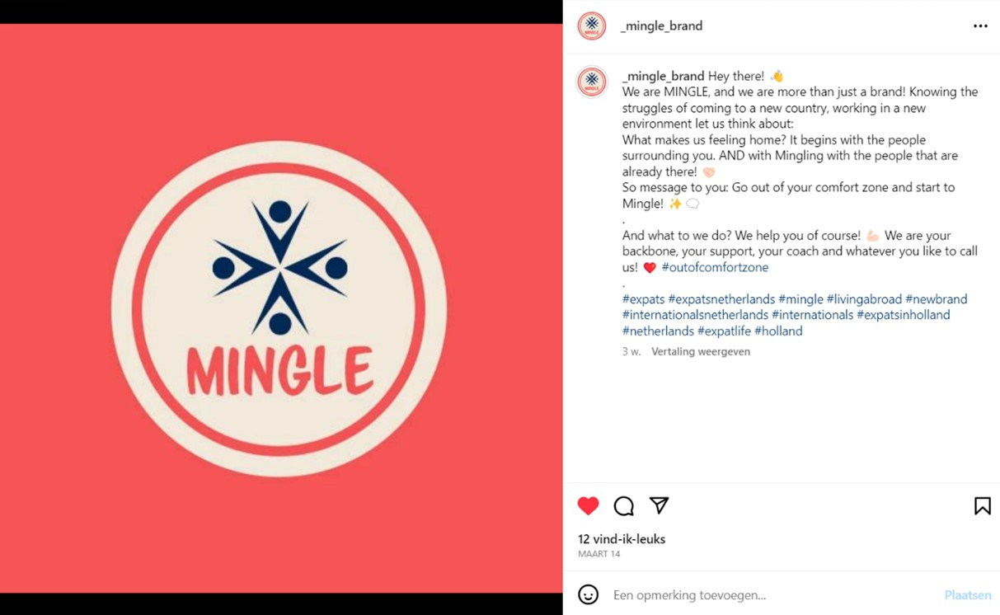
- 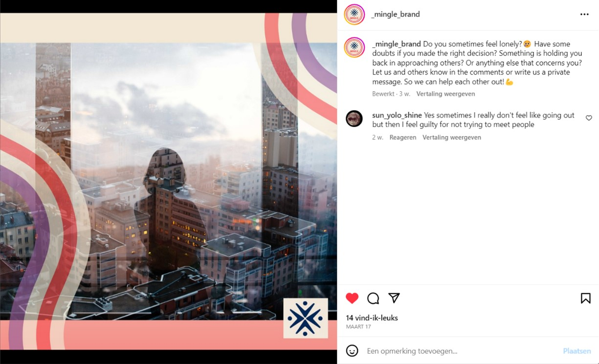
- 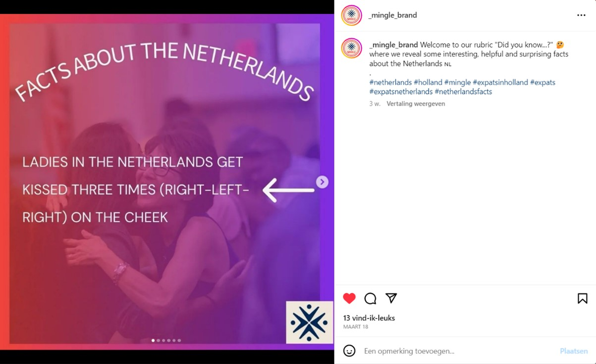
- 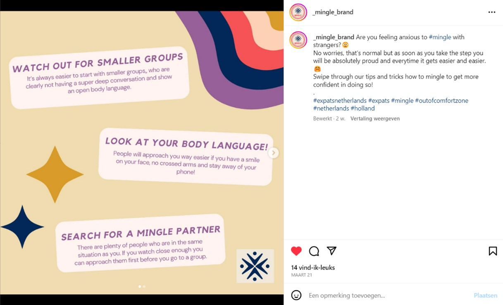
- 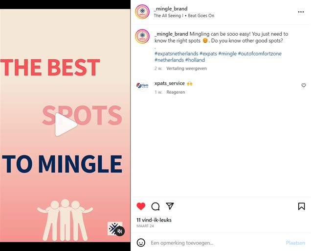
- 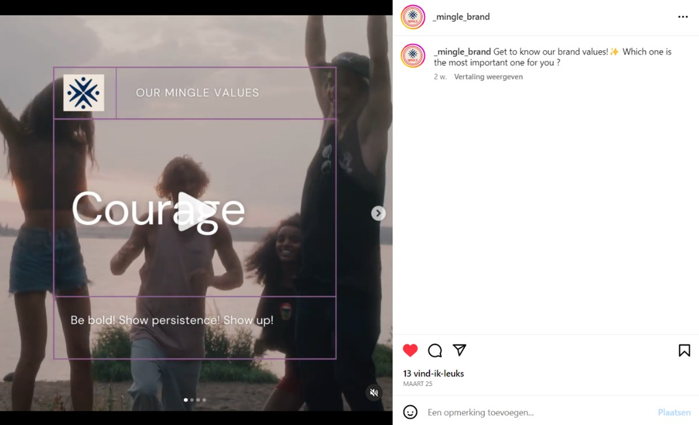
- 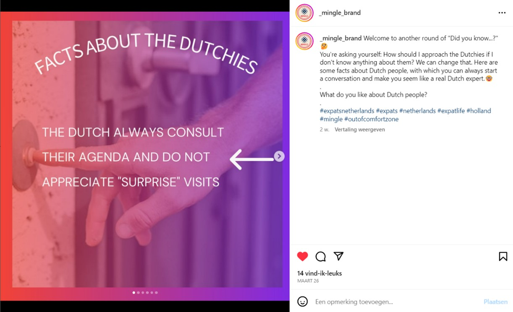
- 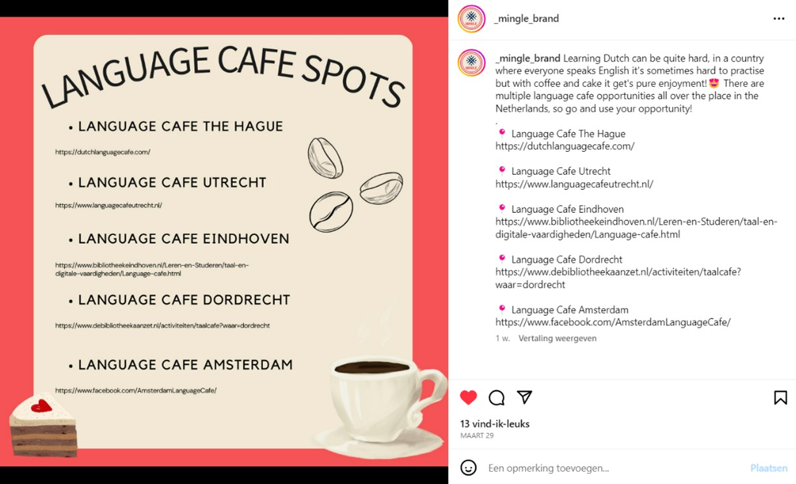
- 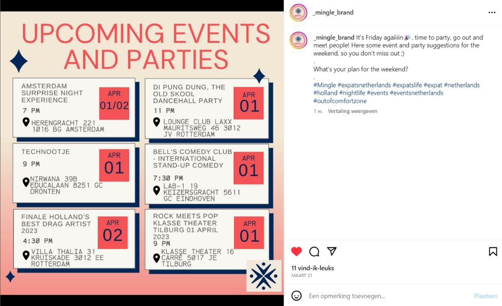
- 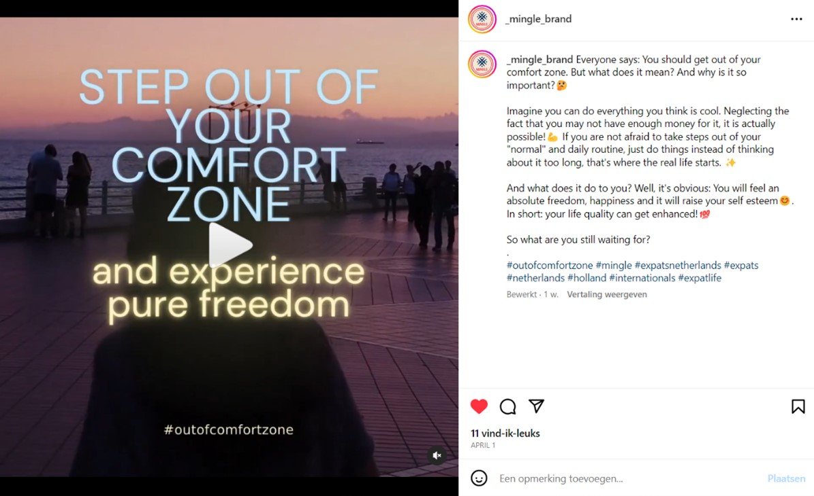
- 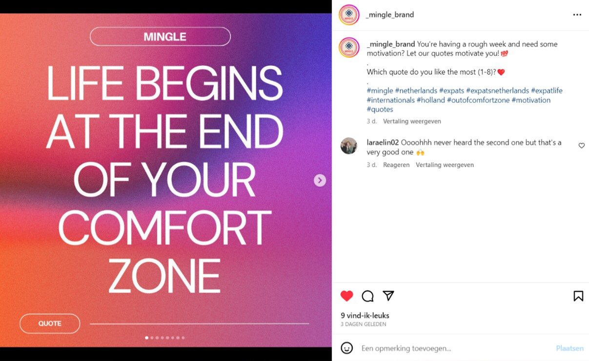
- 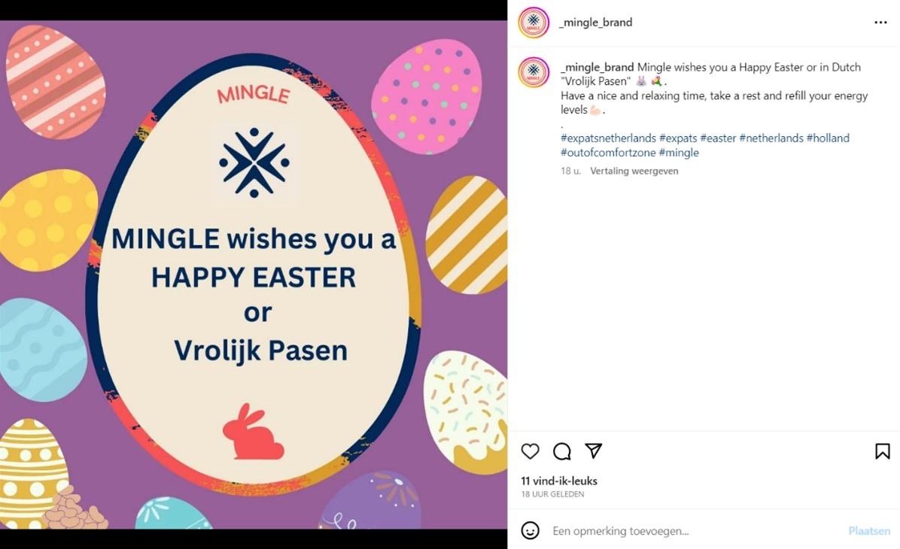
With our first social media post, we introduced our brand with an image of our logo. This way, we got to gain a following of expats who are interested, and our audience can get to know us. We shared our brand message that we encourage them to get out of their comfort zone and mingle with people in The Netherlands. We used hashtags related to the brand, topic and target audience, because this creates a higher reach and engagement (Kaleem, 2022). In all of our social media posts, we made use of our brands’ color pallet.
We asked questions that are relatable to our target audience to engage with them and build a connection. By asking questions we encourage responses. We encouraged our followers to let us and others know in the comments or write us a private message on how they feel, so we can help them and each other out. This way we can bond with our followers and gain a trusting relationship with them.
In this post, we showed some interesting, helpful and surprising facts about The Netherlands. This is a fun, informative post that will give our followers some insights about The Netherlands and Dutch people, to make them feel more at home in The Netherlands. This can help them to be brave and reach out to Dutch people. We used hashtags related to the brand, topic and target audience, because this creates a higher reach and engagement (Kaleem, 2022).
We provided some tips and tricks to our followers on how to mingle to get more confident and brave to meet new people. By providing these tips and tricks to our target audience, we can build a relationship with them and they feel like they can trust our brand. We asked a question in the caption to encourage responses. We used hashtags related to the brand, topic and target audience, because this creates a higher reach and engagement (Kaleem, 2022).
In this video/reel post, we showed some spots in The Netherlands to help our followers to meet new people. This way, they can feel more at home in The Netherlands. We asked a question in the caption to encourage responses. We used hashtags related to the brand, topic and target audience, because this creates a higher reach and engagement (Kaleem, 2022).
We showed our brand values, that we as a brand stand for. This way our audience knows what is important to us as brand and what we encourage them to be. We asked a question in the caption to encourage responses.
In this post, we posted more facts about Dutch people. This way our followers can feel more at home in The Netherlands and brave to approach Dutch people. It can be a conversation starter. We asked a question in the caption to encourage responses. We used hashtags related to the brand, topic and target audience, because this creates a higher reach and engagement (Kaleem, 2022).
We provided some language café spots in The Netherlands for our followers, so they can be brave, and meet new people here. They can talk English, which can help to make it easier to conversate. They can build a connection with people in The Netherlands, which will help them making them feel more at home in their new country. By providing this help, we can create a positive and trusting relationship with our followers.
In this post, we showed some party spots in The Netherlands, so our audience can meet new people. They can make friends with people in The Netherlands, which will help them making them feel more at home in their new country. By providing this help, we can create a positive and trusting relationship with our followers. We asked a question in the caption to encourage responses. We used hashtags related to the brand, topic and target audience, because this creates a higher reach and engagement (Kaleem, 2022).
In this post (reel), we shared what it means to get out of your comfort zone and why it is so important. We explained what stepping out of your comfort zone means in a very attractive way to encourage our followers to do it. This is an important message we have to our audience as a brand, so they can be aware of what we stand for. We asked a question in the caption to encourage responses. We used hashtags related to the brand, topic and target audience, because this creates a higher reach and engagement (Kaleem, 2022).
We posted some motivational quotes, that are very much in line with our brand values. Our audience will feel more connected to us, because of these motivational and unique quotes. We asked a question in the caption to encourage responses. We used hashtags related to the brand, topic and target audience, because this creates a higher reach and engagement (Kaleem, 2022).
In this post, we wish our followers a ‘Happy Easter’. This is a fun post to engage and connect with our followers. We used hashtags related to the brand, topic and target audience, because this creates a higher reach and engagement (Kaleem, 2022).
Management
Lean Canvas
Fill in at least 2 bullet points per building block and according to the rubrics.
Problem
- top 3 problems we solve for our target group
- how the problems are solved now (existing alternatives) Different online guides available which offer tips and tricks on how to integrate into the Dutch community as well as explaining the Dutch culture to expats Different language courses offered by the local municipalities, schools, universities, various websites and apps Similar to the existing alternative mentioned at first, there are online guides and video which try to explain how to overcome being in an expat bubble only -> The same tips and tricks are given and multiple times repeated for all three problems (such as learning the language, getting to know the culture and being open-minded), but how exactly and where you can make friends and establish these long-lasting relationships with the Dutch people is not clear.
- Integrating long-term into the Dutch community as an expat, establishing real friend- and relationships with the Dutch
- Language Barrier
-
Being stuck in the typical "expat-bubble"
Solution
- Our main selling solution is the Mingle-Maker: a tool that mediates between expats and events, which attract Dutch locals and therefore symbolize a common ground for expats to reach out to Dutchies with similar interests, all while being part of an event/community activity!
The Mingle-Maker is inspired by a buddy-system that matches expats with Dutch community events they are very likely to fit in. This tool is offered through our website. The main idea is to get to know the expat applying for this service through a survey, understanding their persona and then finding and matching them with a Dutch community event, they are very likely to attend and enjoy. These events are tailored to the expat´s personality and popular with Dutch people. Our brand “Mingle” will serve as the mediator between the expat and the event, selling the ticket(s). Since we are a start-up, we will focus at the beginning on matching the expats to already existing events and only later (when our brand has grown bigger) implement our own events. We promise to offer expats a place to start new relationships!
Customer segments
- List your target customers and/or users.
- - mainly single expats within their late 20s/early 30s
- - but also parents in between 30-45 with young children)
- - interested in staying in NL longer than 6 months (preferably years to come), settling down in NL long-term
- - therefore also highly interested in establishing a good social circle in NL (not only with other expats, but especially also with the locals)
- - active, open-minded, social and outgoing
- - having a hard time learning Dutch and connecting with Dutch locals
- - make most of their contacts at work or during expat meet-ups
This persona is already an early adopter, since all interviewees that fit into this segment already proactively reach out to locals and do the work themselves (so they´re working on a solution already, even though our brand isn´t yet on the market)
Unique value proposition
We from Mingle bring a fresh wind into the lives of expats in the Netherlands. We incorporated our clear understanding of the Dutch culture, our personal experience living in the Netherlands as expats and our self-built network within the Netherlands (and with the Dutch locals) to create the Mingle-Maker. A tool with which we have everything to match newly moved expats based on their own preferences and personality to events within the Dutch community in which they will fit in and have the possibility to form long-lasting friendships. We mediate between expats and event providers (and are inspired by the Business-model of Ticketmaster, since they also mediate between concertgoers and venues).
Unfair advantage
-
- Our personal network within the Netherlands (combined with our personal experience)
- - Our Mingle-Maker Tool (haven´t found any website/service/brand that offers something slightly similar)
We take one step further in comparison to other websites/services/brands by specifically recommending and matching expats with local communities they are likely to fit in. We do not only repeat the same tips and tricks that are mentioned too many times on too many different websites but furthermore combine the most important ones while applying them for our costumer!
Channels
-
- Facebook
- - Instagram
- - Website (through Google SEO)
Key metrics
Instagram:
- • Followers: 81
- • Likes/shares/saves on posts: on average 12 likes per post.
- • Dm´s (direct messages): None
- • Reactions on stories: On average 3 reactions
- • Comments: 3 comments
Facebook:
- • Followers: 10
- • Likes/shares/saves on posts: All in all, 47 reactions
- • Dm´s (direct messages): None
- • Reactions on stories: None
- • Comments: None
Brand´s website visitors:
- • Google Analytics: none
- • Number of users signed up/logged in: none
- • Subscriptions/Sales of the Mingle-Maker service: none
- • Community Chat: none
Revenue streams
1) our first (and main) revenue stream will be an ad-based revenue stream (through Facebook, Instagram and our Website)
2) Our second revenue stream will be stemming from service fees and commissions that we charge the event organizers and the event ticket purchasers based on a percentage of the ticket priceCost structure
Fixed Costs:
- - GWL (Gas, electricity, etc.) = 450€ per month
- - Office in Breda = 316€ per month
- - wages = 3.600€ per person per month -> 14.400€ in total
- - marketing budget = 582,90€
Variable cost:
- - Cost of revenue = 11.658€
Cost per unit:
- For one event ticket: 91,36€
- (see juristification document for calculations and clarifications)
Services/products
-
Our main product is the so-called Mingle-Maker. It´s a tool that enables us to match the expat that signed up via our website with Dutch communities we are in contact with. These communities can be everything from sport schools, workshops, book clubs etc. We let the user fill in a survey to understand their personality better and then put together a list of specifically tailored events/communities that match the expats interest and in which we think he will have an easier time connecting with locals.
We know how overwhelming it can be to be faced with thousands of social activities where you could possibly find new friends, but we, Mingle, take the hard work on us to dig through all the offers and only show the fitting matches to our consumer :)
We as a brand want to encourage young expats to be brave and courageous, open-minded, and proactive in trying out new things and reach out to and approach Dutch people. Instead of overwhelming them with all sorts of offers, we give them a nudge in the right direction!
Validation of Assumptions
Write a reflection on the choices made in creating choosing the trademark, including an analysis of the existing alternatives.
Appendix
Please use the list below to provide links to evidence for all parts of your justication. Please double-check all links before delivering the website. Do not hesitate to refer to these numbers above.
-
Management:
First version of lean canvas:
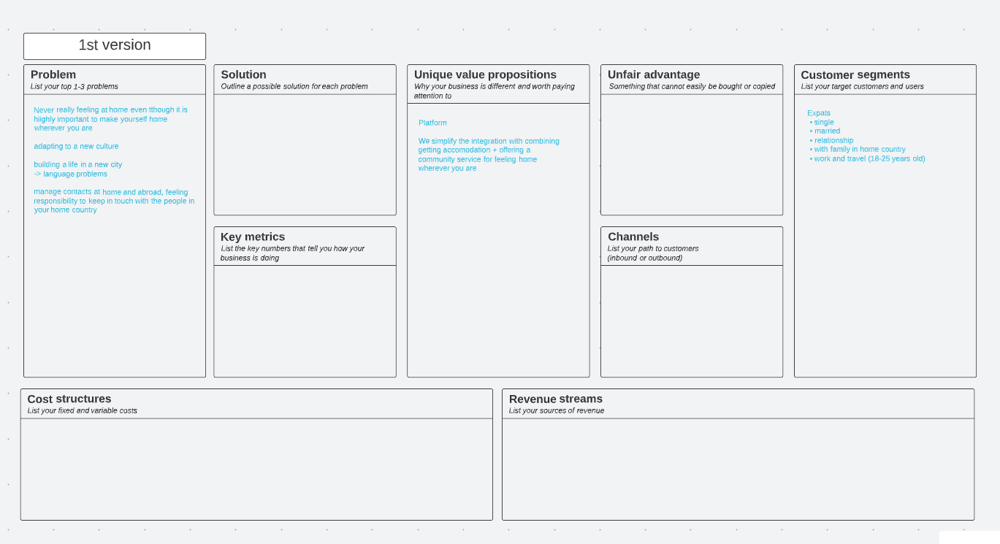Second version of lean canvas:
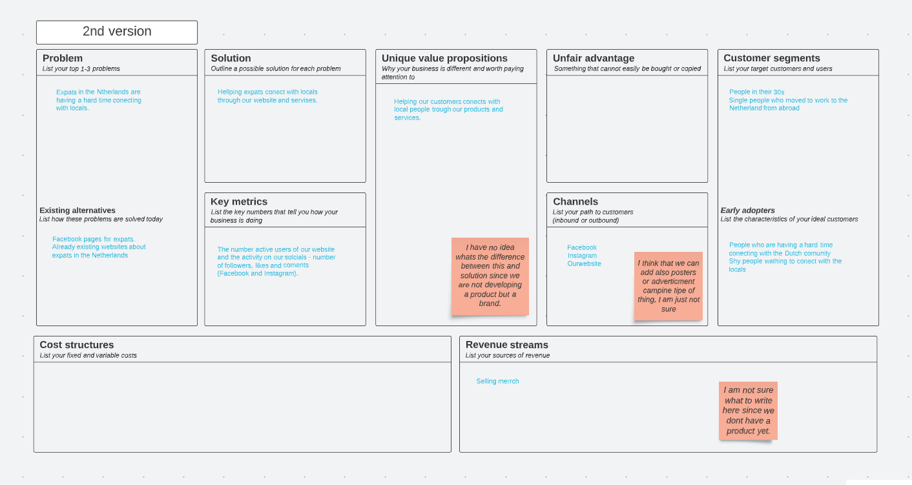 Final version lean canvas (detailed) -
Production
- Marketing
- Description of evidence #4
- Description of evidence #5
{kind=link}